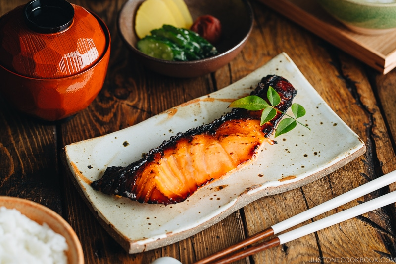

Miso Salmon Recipe

A sweet and savory Japanese meal for the weeknight.
Ingredients (2 servings)
- 2 skin-on salmon fillets
- Marinade
- 2 Tbsp miso
- 1 Tbsp sake
- 1 Tbsp soy sauce
- 1/4 tsp roasted sesame oil
- 1 green onion/scallion
Directions
- Make sure that your salmon fillets don't have scales and tiny bones. Run your fingers back and forth across the skin to see if any scales are left. To remove them, use the flat side of a knife and scrape against the scales. To check if there are any bones, run your fingers along the flesh surface and the sides. You will feel the hard tips of the bones poke your skin. Use fish boning tweezers to pull them out. I recommend slicing the salmon fillet in half so it marinates and cooks faster.
- Mix all the ingredients for the marinade in a large bowl.
- Place the salmon in the bowl, skin side up. Spoon the marinade on top and coat the salmon skin. Cover and keep in the refrigerator for 1-2 hours (a thicker cut needs more time). This is a lightly seasoned miso fish (not miso-marinated fish like black cod), so don't marinate salmon overnight since miso is quite salty.
- Preheat the oven to 425°F (218ºC) with a rack placed in the center position. For a convection oven, reduce the cooking temperature by 25ºF (15ºC). As miso burns easily, remove any excess marinade completely from the salmon.
- Place salmon pieces skin side down on a baking sheet. Transfer the baking sheet to the oven and attach the probe to the oven. Bake the salmon (no need to flip it) until an internal temperature of 125-130°F* (52-54ºC) is registered at the thickest part of the fillets, for roughly 18-20 minutes.
- Optional: You can dilute marinade with water and cook it for a few minutes. Serve with the salmon or use it for other dishes.